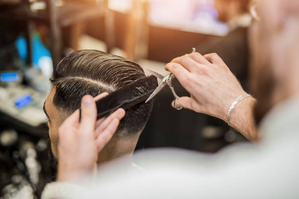
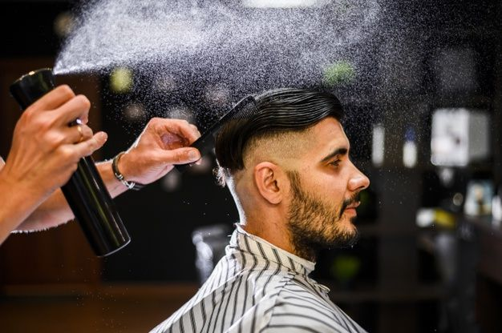
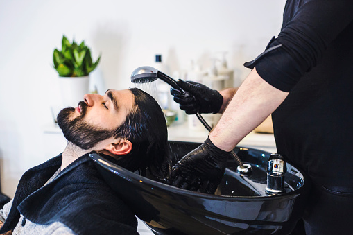

SERVICES
We Provide Better

Hair Styling
A hairstyle, hairdo, haircut or coiffure refers to the styling of hair, usually on the human head but sometimes on the face or body.

Beard Trime
Brotzeit is a German word that technically translates as “bread-time,” but has come to mean a hearty snack consumed between the main meals of the day.

Hair Cut
Over-direct the hair forward to create length and density toward the back of the hair Over-direct the hair back to create movement, density and weight in the front.

Dry Shamboo
Dry shampoo is a product to absorb the dirt, oil and grease of your scalp without washing it. Many people use it to freshen their hair after working out.